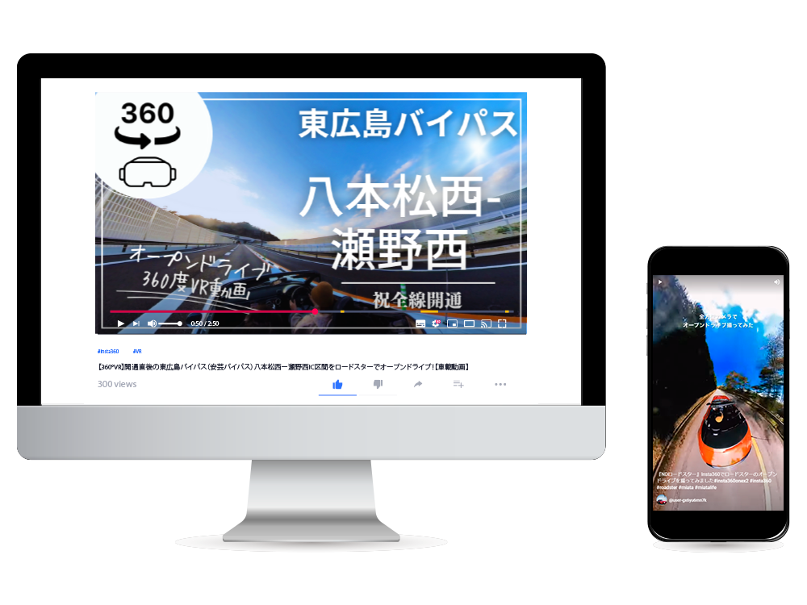

360度VR YouTube動画
サムネイル
サムネイルデザイン・動画

- 概要
-
オープンカーで走行した360度VR動画のサムネイル画像の作成、動画の編集を行いました。
地元である東広島の魅力を全国のドライバーに伝えたいと思い、全通開通した直後の東広島バイパスを実際に走って動画を作成しました。
カメラは『insta360』を使用し、オープンカーのシート後方に専用のアタッチメントで固定して撮影を行っています。
動画は現在限定公開です。
- 制作ポイント
-
オープンカーによる360度VR動画であること、また開通したばかりの道である事が伝わる画像をトリミングしサムネイルに使用しました。左上に、VRマークと360という文字を大きく配置し、YouTubedeで検索した際に一目でVR動画であることが認識できるようにしました。
YouTubeチャンネルの中でシリーズ化できるような文字配置を意識しました。
- 使用ツール
- Illustrator / Photoshop